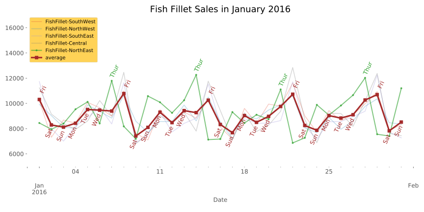
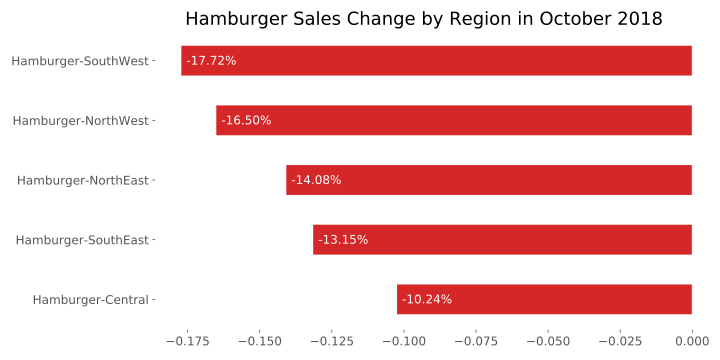
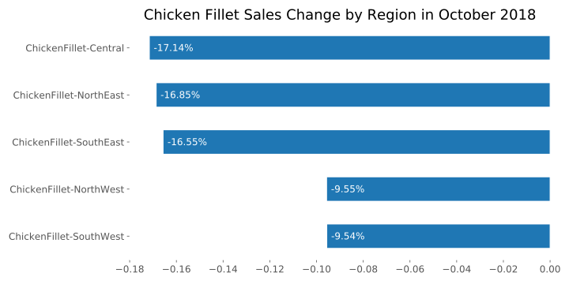

From the total sales across the US from each product, we can see that there has been a steady increase of sales for all of our products. In October 2018, when Burger King releases their Impossible Burger, sales plummeted with a decline of around 14% across all our products compared to last month. After the downfall, sales have been staying at the same level.
In terms of micro trends, we see something interesting from fish fillet sales. On average, we see a steady incline throughout the week beginning from Saturday to a peak on Friday. But in the north east, sales are the most on Thursdays and endured a sudden drop on the days after. The overall pattern for north east is shifted one day before compared to the overall pattern.
Because hamburger sales attribute to the largest proportions of our sales, we want to investigate which part of the US suffered the most from the introduction of Impossible Burgers on October 2018. Areas along the west coast have the most impact.
Meanwhile, for the west coast, chicken fillet sales on October were relatively suffered less decline. We can infer that for people in the west coast who regularly purchase chicken fillet, they have been relatively loyal to their preferences, but for those who prefer hamburgers in the past, they are happy to try out new products from Burger King.